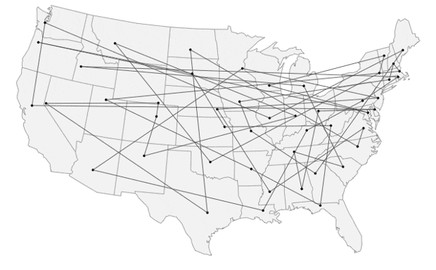
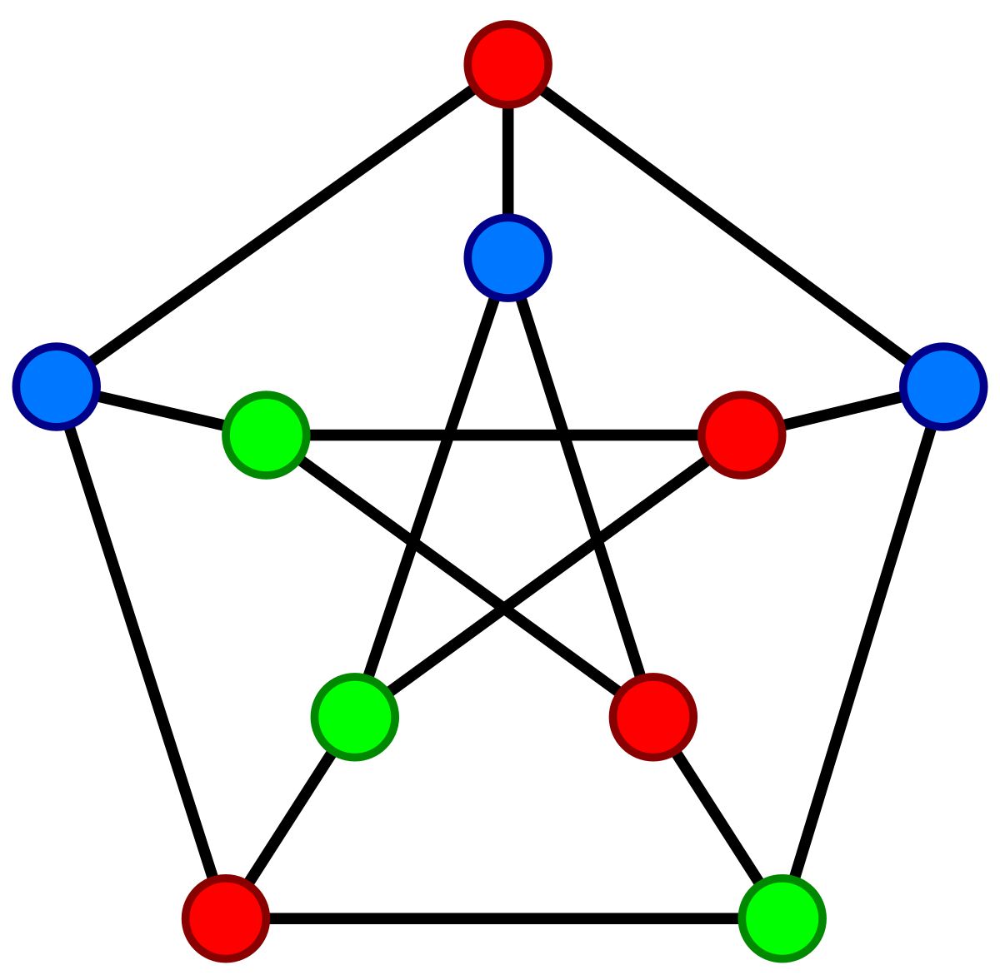

TSP Visualization
Christofides-inspired MST approximation for the Traveling Salesman Problem with interactive visualization.
View projectChristofides-inspired MST approximation for the Traveling Salesman Problem with interactive visualization.
View projectReal-time visualization of Bubble, Selection, Insertion, Merge, and Quick sort.
View projectInteractive real-time visualization of skip list insert, delete, and search operations.
View projectHuffman encoding-based compression and decompression utility.
View projectComputes the minimum graph coloring so no two adjacent vertices share a color.
View projectPlatform for book clubs with authentication, book tracking, and discussion forums.
View projectWebsite for Baylor's inaugural University Innovation Fellows cohort.
View projectReal-time multiplayer shooter with a custom binary protocol, dual WebTransport/TCP+UDP transport, and authoritative Rust server — playable from browser or desktop.
View projectMulti-account AWS cost tracking dashboard with a REST API, CLI, and Celery-powered scheduled polling from Cost Explorer.
View projectAlways open to new opportunities and conversations. Feel free to reach out.
The Traveling Salesman Problem asks for the shortest route visiting all cities exactly once and returning to the start. It's NP-hard — no polynomial-time algorithm is known for all instances. The Christofides algorithm produces solutions within 1.5× the optimum for metric instances.

My modified approach builds a minimum spanning tree (MST), then performs a depth-first search recording visit order. This reduces time complexity from O(n³) to O(n² log n) compared to the full Christofides algorithm.
Real-time visualization of sorting algorithms built with C++ and SDL2. Watch Bubble, Selection, Insertion, Merge, and Quick Sort work step by step on a live array.
Interactive visualization of a skip list — a probabilistic data structure using layered linked lists as "express lanes" to achieve O(log n) average time for search, insert, and delete. Built with C++ and SDL2.
Compress and decompress text files using Huffman encoding — a greedy algorithm that builds a binary tree from character frequencies, assigning shorter codes to common characters for compact output.
Computes the chromatic number of a graph — the minimum colors needed so no two adjacent vertices share a color. Applications include scheduling, register allocation, and frequency assignment.

A web platform for book clubs built with Java and Spring Boot for Baylor's Software Engineering II course. Features user authentication, book management, meeting scheduling, and discussion forums.
Website for Baylor University's inaugural University Innovation Fellows cohort — a student-led initiative fostering innovation and entrepreneurship on campus. Showcases the program's mission and provides info for prospective fellows.
A real-time multiplayer first-person shooter built as a networking course final project. Players connect from a native desktop client or a browser and fight in a shared 3D arena. All game logic runs on an authoritative Rust server; clients send input and receive world-state updates at ~60 Hz.
Server: Rust with Tokio async runtime — handles WebTransport (QUIC/HTTP3) and legacy TCP+UDP simultaneously on the same player state.
Client: Godot 4 (GDScript), exported to both native desktop and browser (HTML5). Browser clients use a hand-written JavaScript WebTransport bridge called via JavaScriptBridge.eval().
Protocol: Shared Rust crate with nine hand-serialized binary message types (big-endian, no external serialization library). Deployed on AWS EC2 with Let's Encrypt TLS.
Dual-transport architecture — the same server accepts WebTransport (browser) and TCP+UDP (desktop) clients in the same session. The transport layer is abstracted so game logic is transport-agnostic.
Authoritative hit detection — the server validates melee hits by computing 3D Euclidean distance; clients cannot self-report damage.
Position reconciliation — the client tracks per-frame drift between its locally-predicted position and the server-authoritative position, exportable as CSV and viewable as a live in-game overlay (F3).
Binary protocol — PlayerInput is 20 bytes; WorldState is 6 + 26 bytes per player. All nine message types implement serialize() / deserialize() with round-trip tests.
CloudCost tracks and analyzes AWS spend across multiple accounts from a single dashboard. Connect any number of AWS accounts, let Celery Beat poll Cost Explorer on a daily schedule, then explore breakdowns by service, region, and date range — from the web UI, the REST API, or the cloudcost CLI.
Backend: Django + Django REST Framework with JWT authentication. PostgreSQL stores accounts and cost data; Redis backs the Celery task queue.
Workers: Celery Beat triggers daily polls of the AWS Cost Explorer API; credentials are encrypted at rest with Fernet.
CLI: cloudcost command installed via uv tool — supports init, login, accounts add/list, and costs summary with custom date ranges.
Deployment: Docker Compose bundles the web server, worker, beat scheduler, Postgres, and Redis into a single docker compose up.
Multi-account support — add as many AWS accounts as needed; each uses a scoped IAM user with read-only Cost Explorer permissions.
Encrypted credential storage — access keys are Fernet-encrypted before being written to the database.
Flexible querying — filter cost summaries by account, service, region, or arbitrary date ranges via the API or CLI.
Scheduled polling — Celery Beat runs a daily job at 02:00 UTC; one-off polls are available via the CLI or a Django management command.